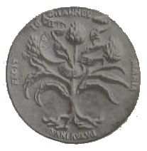
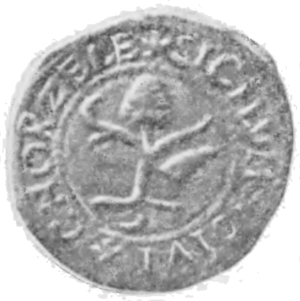

Gmina miejsko-wiejska w powiecie przasnyskim i województwie mazowieckim. Zamieszkuje ją około 10 200 osób, z czego w samym mieście około 3 100 osób. Miasto Chorzele, lokowane w XV wieku, było miastem królewskim Korony Królestwa polskiego. Prawa miejskie utraciło w 1870 roku i odzyskało w 1919 roku.
Herb
W polu srebrnym drzewo zielone o trzech korzeniach i dwóch konarach, z których prawy dodatkowo rozgałęziony na dwa mniejsze, na którego szczycie znajduje się owoc karczocha zielony; na lewo od pnia róg myśliwski czarny z okuciami, ustnikiem i wylotem złotymi, ułożony na opak w skos.
Godło herbowe znane z XVI i XVII-wiecznych pieczęci miejskich. Motyw drzewa z karczochem zaczerpnięty został być może z medalionu królowej Bony autorstwa Jana Marii Padovano. Karczoch to symbol płodności i użyczenie tego motywu herbowi miasta mogło stanowić pomyślną wróżbę na przyszłość. Róg myśliwski dodano zapewne w nawiązaniu do obfitości zwierzyny w okolicznych lasach.

Medalion królowej Bony

Odcisk pieczęci Chorzel na dokumencie z 1553 roku